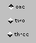

Packages This Package Prev Next Index
public class java.awt.CheckboxGroup
extends java.lang.Object (I-§1.12)
{
// Constructors
public CheckboxGroup(); §1.6.1
// Methods
public Checkbox getCurrent(); §1.6.2
public void setCurrent(Checkbox box); §1.6.3
public String toString(); §1.6.4
}
This class is used to group together a set of Checkbox buttons.
produces the following three check boxes:
setLayout(new GridLayout(3, 1)); CheckboxGroup cbg = new CheckboxGroup(); add(new Checkbox("one", cbg, true)); add(new Checkbox("two", cbg, false)); add(new Checkbox("three", cbg, false));
When a check box in a check box group is clicked, AWT sends an action event (II-§1.14.11) to that check box. This event's target is the check box, and its object is a value equal to Boolean.TRUE (I-§1.1.2). No action event is sent to the check box (if any) that is turned off. An application should override the action method (II-§1.10.1) of the check box or of one of its parent containers in order to cause some action to occur.
public CheckboxGroup()
public Checkbox getCurrent()
public void setCurrent(Checkbox box)
box
- the Checkbox to set "on"
public String toString()
Packages This Package Prev Next IndexJava API Document (HTML generated by dkramer on April 22, 1996)